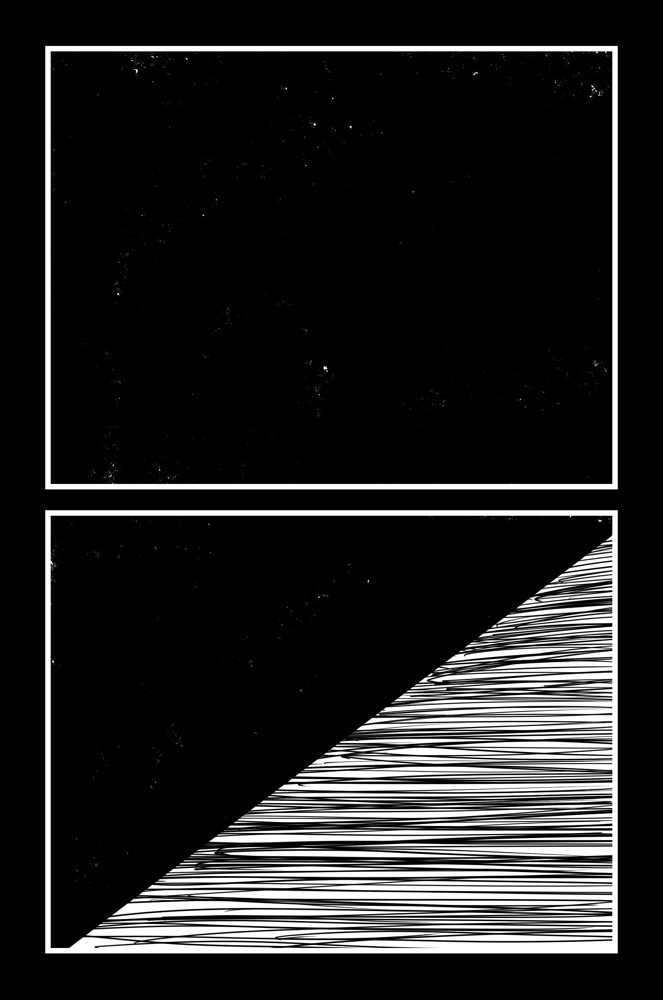
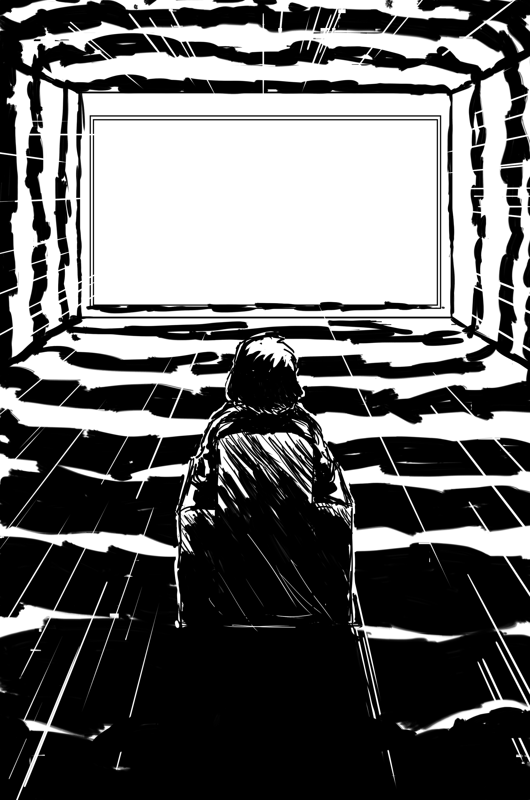
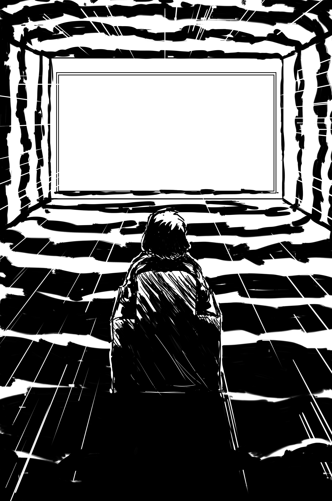
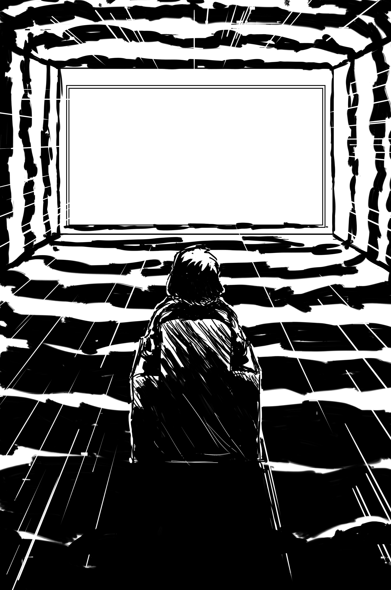
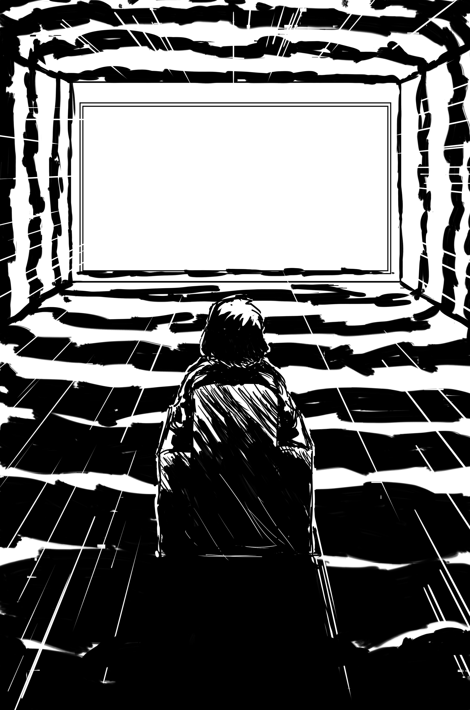

 



This comic, which I am currently in the process of producing, is intended to be another style experiment. Intended to chronicle some of my thoughts about the role art serves in my life, this comic follows a person pining after the high films give her and how that informs her own artistic endeavors. Stylistically, I want to explore the way I sometimes experience real life through the lens
of media I’ve consumed. As such, this is the first comic in which I have attempted to experiment with several rendering styles to convey different lens through which to view the protagonist’s experiences. Surrogate will also be the longest comic I’ve produced at 34 pages. Below are the first 4 pages.

© 2017 all rights reserved Mohar Kalra.